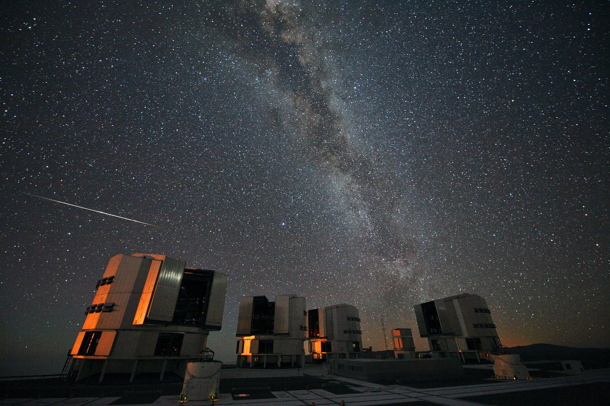

Una notte di attesa, non un appuntamento al secondo
Durante uno sciame meteorico, il cielo può restare tranquillo per diversi minuti e poi offrire più eventi ravvicinati. Aspettarsi una scia a intervalli regolari trasforma un tasso medio in un orologio che il fenomeno non possiede. L’osservazione diventa interessante quando registriamo questa variabilità, insieme alle condizioni che limitano ciò che vediamo.
Uno sciame si osserva quando la Terra attraversa una popolazione di particelle con una storia orbitale collegata. Molti sciami sono associati a materiale rilasciato da comete; altri hanno legami con corpi di diversa classificazione. Non occorre che il corpo genitore passi vicino alla Terra proprio nella notte in cui osservi.
Gli eventi sporadici possono sovrapporsi a quelli dello sciame. Una meteora vista nel periodo delle Perseidi non è automaticamente una Perseide: posizione della traccia, direzione e radiante aiutano a distinguere l’appartenenza.
Il radiante è una direzione apparente
Particelle con velocità relative simili e quasi parallele possono produrre tracce che, prolungate all’indietro, convergono verso una direzione del cielo. Il radiante deriva dalla prospettiva, come binari paralleli che sembrano incontrarsi lontano. Non è una sorgente stellare che lancia scintille verso la Terra.
Lo sciame prende spesso il nome dalla costellazione del radiante. Questo non attribuisce alle stelle di quella costellazione l’origine delle particelle. Le distanze stellari e il materiale nel Sistema solare appartengono a scale differenti.
Vicino al radiante una traiettoria può apparire corta per la direzione di osservazione; più lontano può attraversare un tratto angolare maggiore. Non devi fissare soltanto il radiante per vedere eventi. Campo libero, postura e distribuzione delle tracce contano.
Una Perseide documentata, non una previsione per questa notte

Individua la scia e confrontala con le sorgenti puntiformi. La fonte documenta evento e contesto, ma una sola traccia non permette di ricostruire l’intero radiante in modo indipendente. Per una verifica geometrica più forte servono più eventi e misure delle loro direzioni.
Una fotografia selezionata racconta bene l’istante, mentre un conteggio continuo racconta l’attività durante un intervallo. Una galleria dei migliori fotogrammi non equivale alla distribuzione temporale originale. Se si compongono più tracce di esposizioni diverse, va dichiarato: un composito non è la scena di un singolo secondo.
La lunghezza della scia dà direttamente la velocità in km/s?
No. Servono tempo, distanza e geometria. La lunghezza angolare dipende anche dalla direzione del moto rispetto alla linea di vista. Una scia lunga non impone da sola una velocità fisica maggiore.
Calendario, massimo e durata dell’attività
Gli sciami hanno periodi di attività e massimi che vanno controllati per l’anno. La tradizionale notte di San Lorenzo non coincide obbligatoriamente con il massimo preciso delle Perseidi. Una data ricordata non sostituisce un calendario aggiornato.
Il massimo può essere largo, avere strutture o variare con le popolazioni di particelle incontrate. Ora del massimo, altezza del radiante e notte locale devono essere considerate insieme. Un evento previsto mentre è giorno nel tuo luogo non diventa visibile soltanto perché il tasso è alto.
La International Meteor Organization pubblica riferimenti e calendari. Alcuni servizi possono essere temporaneamente non disponibili: conserva sempre anno e provenienza del documento consultato. Non riciclare una previsione del 2010 nella pagina di un altro anno.
Che cosa significa ZHR
Lo Zenithal Hourly Rate è un tasso normalizzato a condizioni di riferimento, fra cui radiante allo zenit e limite visuale definito nella procedura. Non è il numero garantito che ogni persona vede in un’ora dalla propria città. Orizzonte, nubi e fondo modificano il campione osservabile.
Il limite di magnitudine influisce su quante meteore deboli vengono riconosciute. L’indice di popolazione r descrive la distribuzione per classi di brillantezza nella procedura utilizzata. Non è una costante universale identica per tutti gli sciami e tutti i momenti.
Per comprendere una correzione elementare possiamo usare R ≈ ZHR × sin(h) × r^(m_lim−6,5) × (1−ostruzione). È un modello semplificato di conteggio visuale, da usare per capire il ruolo delle condizioni. Le analisi reali adottano protocolli e controlli ulteriori.
Laboratorio: lo stesso sciame ipotetico, condizioni diverse
Parametri ipotetici costanti; nessuna Luna, effemeride o attività corrente acquisita. Il risultato è un valore medio ideale, non una sequenza di apparizioni regolari né una certificazione del protocollo IMO.
Con radiante a 30°, limite 6,5 e campo libero, ottieni 50 eventi medi per ora nel modello: sin(30°) è 0,5. Lascia h a 30° e porta il limite a 5,5: con r = 2 il valore diventa 25. Sono due effetti differenti che si combinano.
Se metà del campo rilevante fosse ostruita nella semplificazione, il valore si ridurrebbe ancora. Nella pratica, geometria delle ostruzioni e metodo di conteggio richiedono attenzione. Non usarne una semplice percentuale per correggere automaticamente una ripresa con orientamento e sensibilità variabili.
Osservare e contare senza restringere tutto a un oculare
Un campo ampio a occhio nudo è utile per i conteggi visuali. Il telescopio restringe molto la scena e non è lo strumento necessario per la maggior parte delle meteore visibili. Una postura comoda e una direzione scelta evitando bagliori aiutano a mantenere attenzione e campo.
Se fai conteggi, registra intervalli effettivi, pause, nubi, limite visuale e direzione osservata. Una mezz’ora con molte interruzioni non equivale a mezz’ora continua. Cambiare metodo a metà della sessione senza annotarlo rende il confronto ambiguo.
Una ripresa fotografica è un altro campione: sensibilità, esposizione e obiettivo determinano eventi registrati e soglia. Non confrontare direttamente il numero di tracce della camera con quello visuale senza descrivere il campo e le condizioni.
Un tasso medio non decide ogni intervallo
Perfino nel modello ideale di eventi indipendenti con tasso costante, i conteggi di intervalli uguali possono variare. L’attività reale può inoltre cambiare nel tempo. Non interpretare pochi minuti tranquilli come la prova che lo sciame è finito.
Quando confronti due sessioni, considera durata, condizioni e incertezza. Una differenza di poche meteore può non essere sufficiente per sostenere una variazione fisica importante. La capacità di dire «il campione è troppo piccolo» è una competenza, non un fallimento.
Le aspettative fotografiche possono alterare l’attenzione: una sequenza dei migliori istanti fa sembrare continuo uno spettacolo intermittente. Tenere i tempi originali nella registrazione restituisce al fenomeno la sua storia reale.
Una previsione dichiarata e una verifica possibile
Prepara una sessione usando un calendario con anno esplicito. Scrivi radiante, intervallo disponibile, Luna e limiti del luogo. Poi registra ciò che osservi senza trasformare il numero normalizzato del calendario in un obiettivo da raggiungere a ogni costo.
Confronta i risultati con il laboratorio e indica quali ipotesi non erano rispettate. La domanda finale è fisica e osservativa insieme: quanta parte della differenza può dipendere dal campione e quanta dall’attività? La prossima lezione cambierà origine della luce, seguendo particelle e atmosfera nelle aurore.
Fonti e approfondimenti
Testo e schemi originali AD ASTRA. Le fonti indicate sono riferimenti dei concetti trattati; i modelli sono didattici e dichiarano i propri limiti.